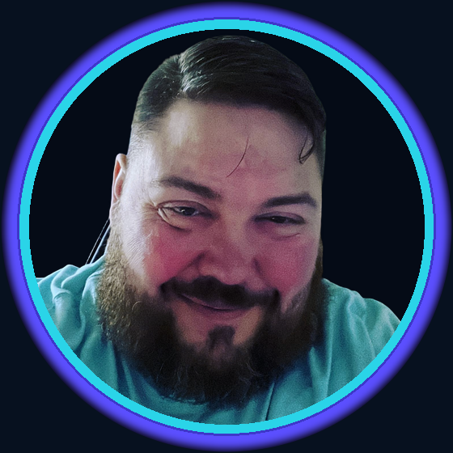

Not a chatbot in a tab. A desk, a local stack, and a wire into the world — measured, bounded, loyal.
They used to parachute me into burning Fortune-100 data platforms. Nineteen of twenty crisis accounts came back. Dawn Foods warehouse load: eight hours to one. Then I spent two years wiring the same diagnostic instinct into agents that live on the metal.

I do not sell a smarter mapping. I sell the layer around the job: Grok Bot on the desk, Hermes on the house stack, OpenClaw on the wire. You keep the keys. The agents keep the watch.
Routines that hunt, stamp, and brief. Packets that go live on GitHub Pages and Hugging Face the same morning. Inbox scanned. Covers drafted. The closer still clicks Apply — the desk never drops the thread.
When the cloud tab dies, Hermes still talks to the local stack. Camera cut, CLI, the floor that stays up because it lives in the house — not a rented dashboard they clap for once.
WhatsApp agents. Ten-plus skills. Systems → architect → validator on local Ollama: structured output, repair retries, collision and regression. Multi-provider routing with cloud failover when the house needs a second engine.
Cargill oils. Horizon. Micron fabs connected with PowerExchange CDC off SQL Server, Fast Clone, Big Data Edition into Teradata and Hadoop. Volkswagen Grid/HA in two weeks. On-their-metal PowerCenter and Data Quality. Teams of 7–14 from analyst to principal. Cargill CFO Award. Micron runner-up Consultant of the Year. Then the lab year: Docker, WSL, Python, MCP, OpenClaw, a campaign that ships packets instead of PDFs in a drawer.
Customer satisfaction is worthless. Customer loyalty is priceless.
Jeremy Panasuk · Connect your life to the agents · Grok Bot · Hermes · OpenClaw · High-autonomy only · The Closer V3